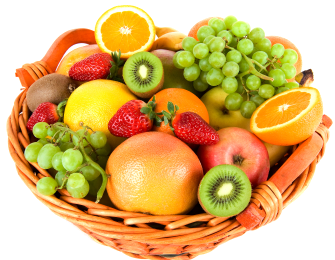
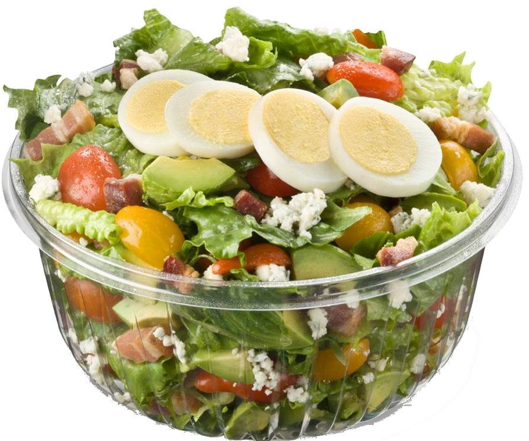

comefit
ORDENA AQUÍ
¿Quiénes Somos?
En comeFit entendemos que llevar una dieta saludable no es cosa fácil y por eso te ayudamos a que tengas platillos ricos y saludables siempre cerca de ti
Nosotros diseñamos platillos para distintas necesidades y capacitamos a las personas para que los hagan con todo el sabor y te los lleven hasta la puerta de tu casa.


Elige uno de nuestros platillos recomendados para necesidades específicas, ingresa tus datos y ¡espéralo en donde quiera que estés!
Para nuestros clientes frecuentes también ofrecemos un servicio de crédito que pueden adquirir por un menor precio.